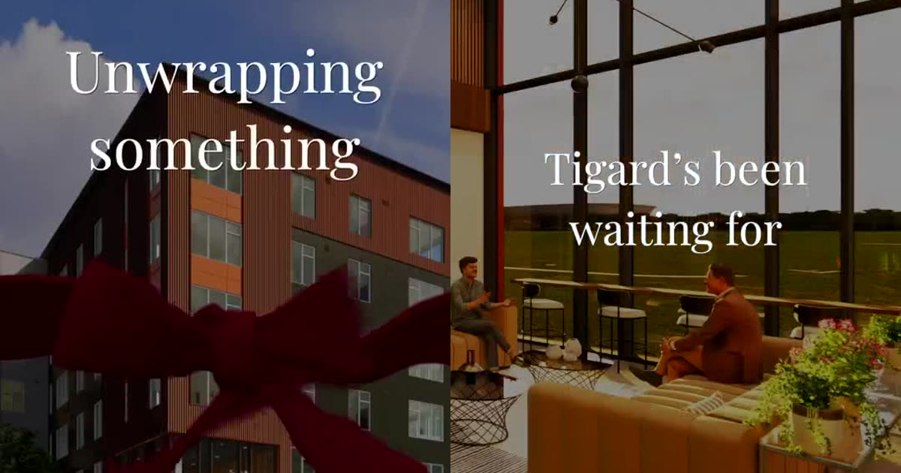

Results
Proof, not promises.
Real lease ups, real communities, real dates. Here is what happens when social, Google and AI visibility run as one team.

Lease up from day oneFORE Property Company · Tigard, OR
Montage: found before the doors opened.
A new 183 home community we started marketing at the planning stage, so it opened with search rankings and social already live.
82.5%leased seven months after opening (Oct 23, 2026)
1ston Google Maps at its own front door for “apartments for rent tigard or”
Lease up takeover
Pillar Communities · Scottsdale, AZ
Huxley Scottsdale: new owner, half leased, our move.
A 192 home luxury community bought in the middle of its lease up. We took over the marketing and made it one story from day one.
52% → 88%leased, from our first day to Nov 2026
+36points leased under new ownership
Lease ups, start to finish
The same team behind every launch.
“From Aura’s rebrand to Lura, The SocialDM was with us from the first post through the lease up. The content looks the way our community feels, and they never miss a week.”
“They built Stillwater Lakes online before the doors opened and carried the lease up from start to finish. One partner, every channel, every week.”
“Coya’s lease up had one team behind every channel. Social, Google and reviews all told the same story, and our leasing team felt it.”
“The SocialDM treats Huxley like it is their own. The content is luxury level, the reporting is clear enough to share with ownership, and our team gets time back for residents.”
“Mill on Maple was another lease up we trusted to The SocialDM from day one. Same standard, same care, start to finish.”
“Fora had The SocialDM behind it from launch. Every post, every listing and every review feels like the same community, and we always know where we stand.”
“If you’re opening a new community, bring The SocialDM and LocalLift in early. Their social content is unmatched, and our team never has to chase anything.”
“When we bought Huxley in the middle of its lease up, we needed a team that could take over without missing a beat. The SocialDM made Huxley look and feel like the community we bought it to be.”
Your community next
Opening or taking over a lease up?
We will show you where your community shows up today and what it takes to be on the renter’s shortlist.
Get your visibility plan